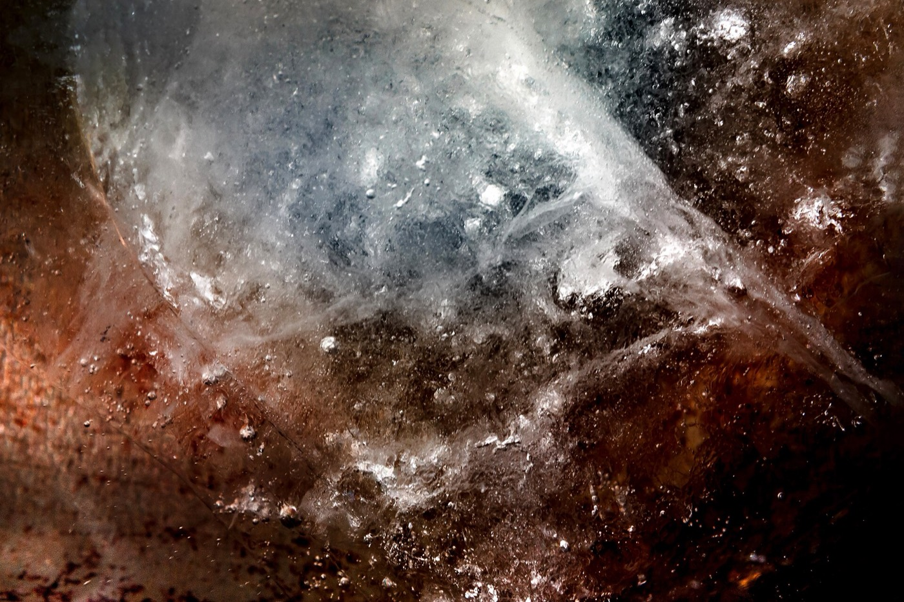
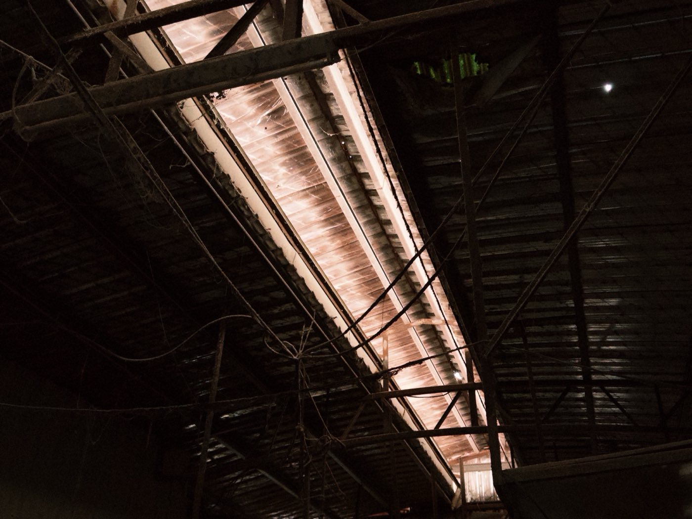

海市是什麼
古人在海上看見浮起來的城郭和市井，看得見，卻不在它看起來的位置，越想靠近越到不了。
四塊冰各投著一個地方的照片：龍口、雙溪、航空城、社子島
25.0 斤一塊冰的重量，展期中照現場秤的數字往下掉
1.5 斤換一袋融水要秤到的重量，寫得越多越重
0 元這攤不收錢，只收一個你離開過的地方
《史記・天官書》說那是蜃吐出的氣。蜃的樣子說法不一，有人說是大蛤，有人說是蛟龍一類。如果蜃樓是龍吐出來的氣，在龍口市場裡浮現的影像，就是從這裡吐出的一座海市。
市場是交換的地方。這個作品借用市場日常的秤重、叫賣和交換，讓地方的記憶不只被看見，也在人和人之間轉手。影像會慢慢散掉，但一個地方可以換成另一個人的地方，繼續留在市場裡。

四個場域
以龍口市場為主要場域，把在雙溪、航空城和社子島的經驗帶進來，看它們和龍口有什麼共同的問題。
走讀撿到的
去雙溪和航空城走讀那幾天，路上看到、聽到的東西。秤不出重量，所以不賣。它們在 3D 海市裡也各立了一塊牌子。

龍口的攤位
四塊冰，四個我去過的地方。影像會隨著冰融掉，秤上的數字會一直往下掉。這個攤不收錢，請用你的一個地方，換走一袋水。
- 時間
- 地點
- 龍口市場〔攤位位置待確認〕
- 攤上有
- 四塊冰、四台秤、投影、價牌、市場塑膠袋、紅繩
攤位旁會貼一張 QR 碼，掃了就到這個網站。到 3D 的攤上做一筆買賣
帳簿
換進攤上的地方都夾在下面這條紅繩上。在 3D 海市裡，每一個地方都會變成一座浮在海上的樓臺。